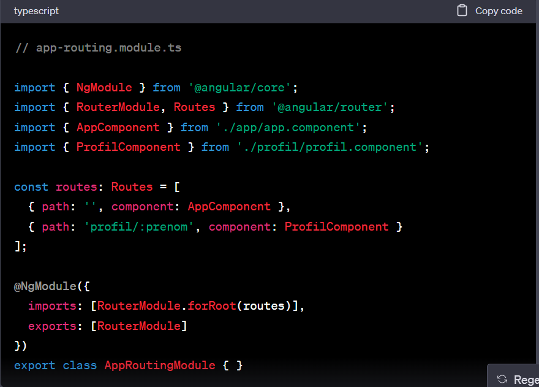
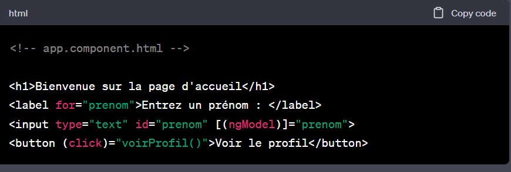
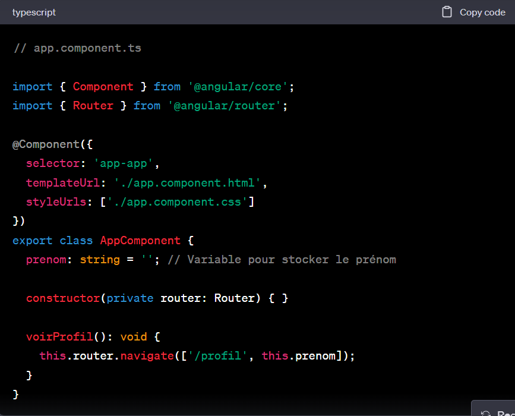
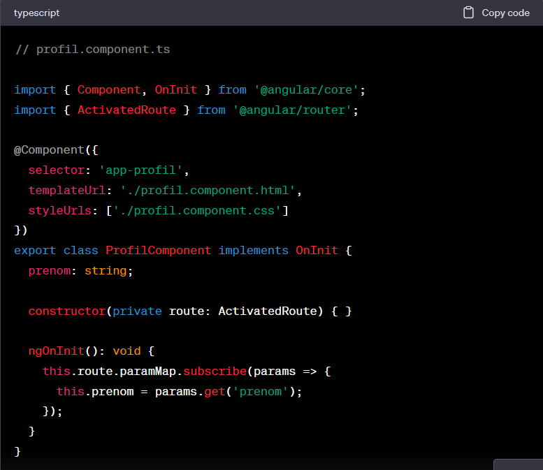
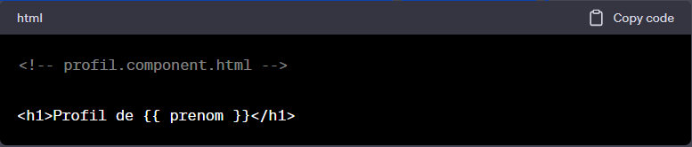

Dans votre fichier de routage (app-routing.module.ts), configurez vos routes de la même manière qu'auparavant :
Dans le template HTML de AppComponent, créez un champ de texte où l'utilisateur peut saisir le prénom et un bouton pour déclencher la navigation :
Dans le composant TypeScript correspondant (app.component.ts), importez Router depuis @angular/router et utilisez-le pour effectuer la navigation lorsque le bouton est cliqué. Le prénom sera extrait de la variable prenom que nous avons liée avec ngModel :
Dans le composant ProfilComponent, importez ActivatedRoute depuis @angular/router et utilisez-le pour extraire le prénom de la route. Voici comment vous pouvez le faire :
Dans cet exemple, nous utilisons route.paramMap.subscribe pour surveiller les modifications de la route et extraire le prénom de la route. Une fois que le prénom est extrait, il est stocké dans la variable prenom.
Enfin, affichez le prénom dans le template HTML de ProfilComponent.
